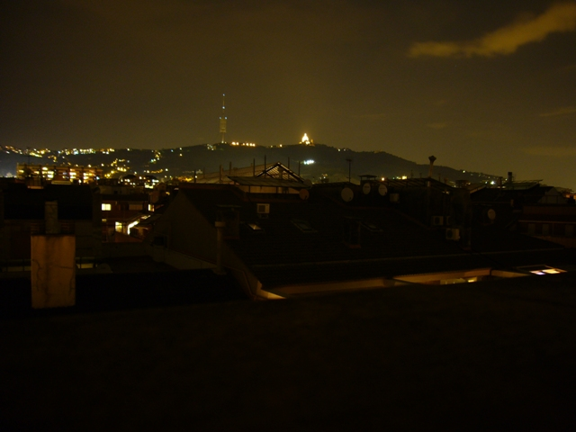

Meteo Sarrià
(Sarrià - Barcelona)
41º23'42"N - 2º7'21"E (110 m.)
Seguir a @meteoSarria
27.5º - 55%
Fotos de Burgos cortesía de www.renuncio.com
Meteogramas
Meteogramas de la estación
Tiempo actual
Tablero de Meteohub
Meteo CAT
Datos actuales BCN (BTV)
Meteosat
Imágenes por satélites
Radar InfoMet
Radar AEMET
Meteoclimatic - Actual
WunderMap Barcelona
WunderMap BCN (pantalla completa)
El tiempo en Renuncio (Burgos)
WebCam Burgos (Cid)
WebCam Burgos (Catedral)
Meteorología
Fòrum Picó
Modelos
Modelos GFS
Meteociel (GFS-EU)
AEMET
Meteored
Meteoclimatic
ElTiempo.es
Predicción por localidades
Accuweather
Weather Underground
Meteohub
Mas Info El Tiempo
vit
Última actualización el 14.08.2024 a las 11:40:09
Temperatura
27.5º
Humedad
55%
Presión
1010.2 hPa
Temp. máxima
27.4º (11:36)
Temp. mínima
23.7º (06:54)
Temp. sensación
27.5º
Vel. viento
1.4 km/h
Dir. viento
32 (NNE)
Precipitación
0.00 mm
Condiciones actuales
Weather Display Live
You need to install v8, or greater, of Flash Player from
Adobe
and have javascript enabled to view Weather Display Live.